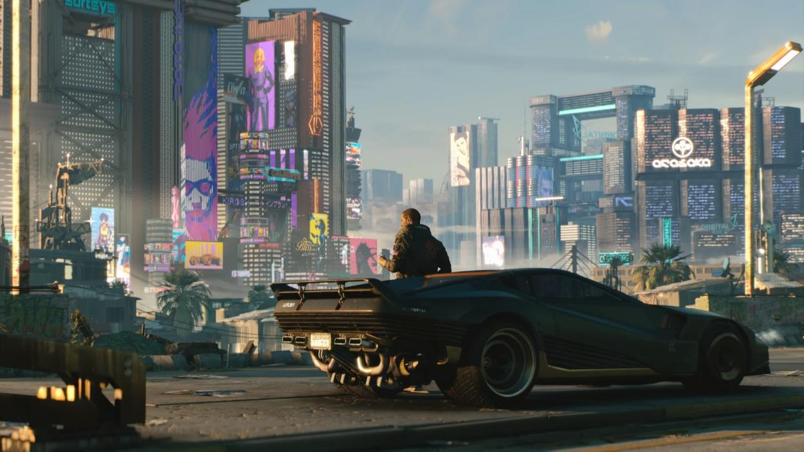
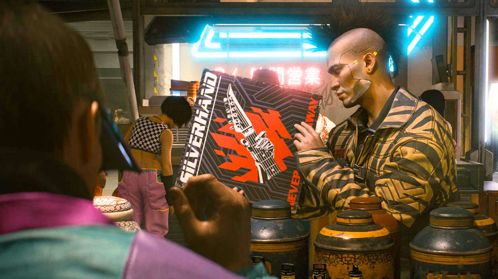
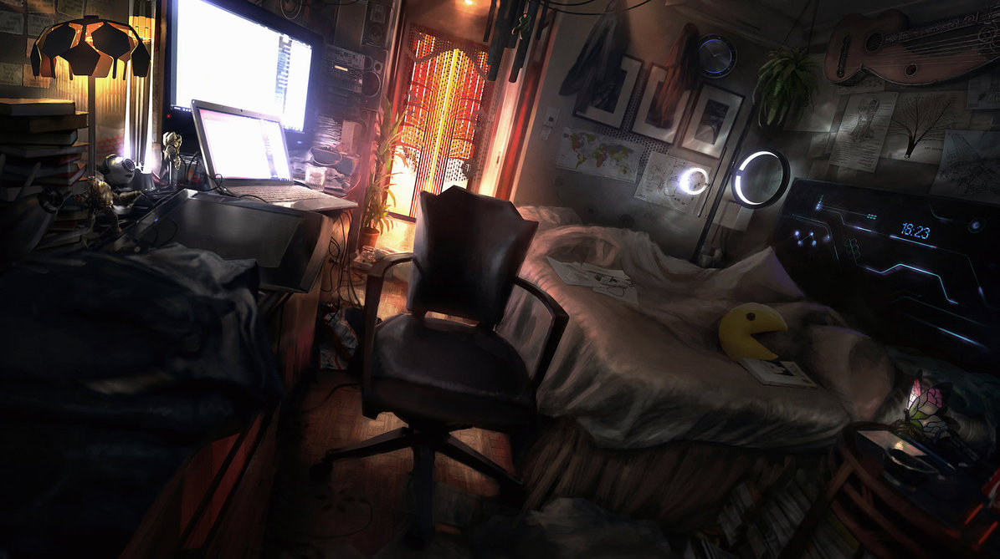

Культура

Рост технологий, оказал значительное влияние на культуру города. Местные жители, начали активно использовать их во всех сферах деятельности, и в конце-концов, они стали неотъемлемой частью повседневности, как для нас телефоны с компьютерами.

